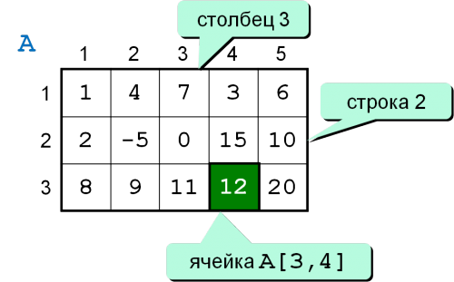
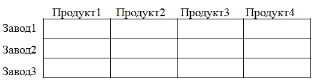
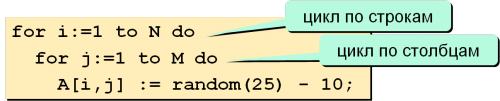
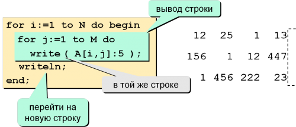

Матрица или двумерный массив – это прямоугольная таблица чисел (или других элементов одного типа). Каждый элемент матрицы имеет два индекса (номер строки и номер столбца).

Исходные данные для решения многих задач можно представить в табличной форме:

Или в виде двумерного массива так:
Описание, ввод и вывод элементов двумерного массива
Варианты описания двумерного массива (традиционный pascal)
- Описание массива в разделе переменных:
- Описание массива через раздел type:


Следующий фрагмент программы выводит
на экран значения элементов массива по строкам:

Результат:
8 2 1 3
5 8 0 8
6 3 9 3
3.3 4.7 3.7 5.4
2.9 1.7 2.3 4.0
8.3 3.7 8.4 1.4
Рассмотрим следующую задачу: Получены значения температуры воздуха за 4 дня с трех метеостанций, расположенных в разных регионах страны:
| Номер станции | 1-й день | 2-й день | 3-й день | 4-й день |
|---|---|---|---|---|
| 1 | -8 | -14 | -19 | -18 |
| 2 | 25 | 28 | 26 | 20 |
| 3 | 11 | 18 | 20 | 25 |
Т.е. запись показаний в двумерном массиве выглядела бы так:
| t[1,1]:=-8; | t[1,2]:=-14; | t[1,3]:=-19; | t[1,4]:=-18; |
| t[2,1]:=25; | t[2,2]:=28; | t[2,3]:=26; | t[2,4]:=20; |
| t[3,1]:=11; | t[3,2]:=18; | t[3,3]:=20; | t[3,4]:=25; |
Или в pascalabc.NET:
Объявление двумерного массива: